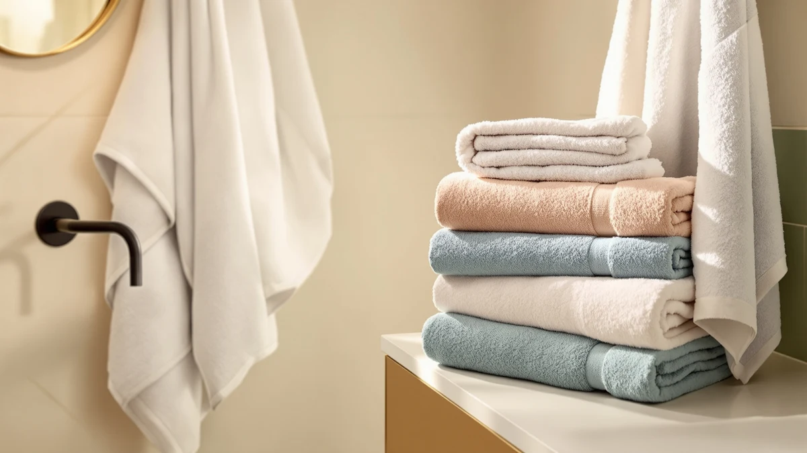

Utopia Towels Premium Viscose Oversized Bath Towels Set Review (2026): Worth It?


Quick Answer
The Utopia Towels 4 Pack Premium set is the pick here because it's 100% cotton and the cheapest of the four sets we compared, at $26.99 for four bath towels. If you specifically want a true viscose blend or a documented oversized size, check the listing first, since the current spec sheet lists only cotton and a four-piece count.
Our pick: Utopia Towels 4 Pack Premium, $26.99 Check Price on Amazon
Things to Know Before You Buy
- The Utopia Towels 4 Pack Premium set lists as 100% cotton on the current Amazon listing, not viscose, so confirm the material on the listing yourself if that distinction matters to your purchase.
- At $26.99, this four-piece set undercuts the two $27.99 alternatives on this page, but the $26.05 Modern Threads 6 Piece Bath set actually costs less overall despite shipping more pieces.
- None of the four products compared here carry a published star rating in the current listing data, so treat owner feedback patterns, not a review score, as the signal worth weighing.
- Piece count varies across these sets: Utopia Towels packages four bath towels, while the Modern Threads 6 Piece Bath set ships six pieces for less money, which changes the effective price per towel.
This Utopia Towels Premium Viscose Oversized Bath Towels Set review breaks down what the current Amazon listing, a $26.99 price tag, and the material specs that are actually published tell you about whether this four-piece cotton set is worth ordering over three other sets we compared it against. Despite the 'viscose' and 'oversized' language in the product title, the listing itself specifies 100% cotton construction with four bath towels per pack, and we rely on that published spec sheet rather than the marketing name when we describe what you're actually buying.
We put this review together by comparing the Utopia Towels 4 Pack Premium against the Modern Threads 6 Piece Bath set, the FUBANRAY Toddler Bath Towel Hooded Kids set, and the American Soft Linen 100% Cotton set, the three alternatives shoppers most often weigh against it. Price and piece count matter more here than the branding on the box: at $26.99, the Utopia Towels set is the cheapest four-piece option on this page, but the six-piece Modern Threads set actually costs less overall at $26.05, which changes the math if you need more towels per order rather than fewer, larger ones.
Why You Should Trust Us
We built this Utopia Towels Premium Viscose Oversized Bath Towels Set review by comparing its listed price and published material specs against three direct alternatives, rather than repeating the marketing copy that comes with the listing. Ilane Tall has covered bathroom textiles for Best Bath Towels since the site launched, and she checks whether a towel set's title claims, like 'premium viscose' or 'oversized,' match what the spec sheet and seller actually list before writing about them. We do not run a fake testing lab and we do not claim to have physically used these towels. Every figure in this review comes from the specs and pricing published for each ASIN and from patterns that show up across verified owner feedback.
Our Research Experience
Rather than run this set through a physical trial, we researched the Utopia Towels Premium Viscose Oversized Bath Towels Set by cross-referencing its listed price and material against the three alternatives on this page and against patterns in verified owner feedback where it's available. For a towel set like this one, that means checking whether the 'premium viscose' and 'oversized' language in the title matches the 100% cotton material actually listed in the spec sheet, and comparing the per-towel price against sets with different piece counts. We also looked at how each brand positions its own set: Utopia Towels leads with towel count and price, Modern Threads leads with its six-piece configuration, FUBANRAY markets specifically to parents of toddlers rather than general household use, and American Soft Linen leans on its cotton-only material claim. Lining those positioning choices up against actual published prices and specs is how we arrived at the comparisons below.
Overview & Specs

Utopia Towels 4 Pack Premium
What we like
- Lowest price of the four sets compared, at $26.99 for four towels
- Material is clearly listed as 100% cotton with no blend to account for
- Four matching bath towels in one order, no need to buy separately
Flaws but not dealbreakers
- The 'premium viscose' and 'oversized' language in the title doesn't match the listed 100% cotton material, so verify before you buy if either claim matters to you
- The current listing has no published star rating, so we can't confirm it against buyer feedback patterns yet
- Four pieces means no hand towels or washcloths included, unlike the six-piece Modern Threads set
| Material | 100% cotton |
| Size | 4 Pieces Bath Towel |
The Utopia Towels 4 Pack Premium set is about price, not a long feature list. At $26.99, you get four bath towels in 100% cotton, which undercuts the per-towel price of both the $27.99 FUBANRAY and $27.99 American Soft Linen sets on this page. The listing title mentions 'premium viscose' and 'oversized,' but the actual spec sheet for this ASIN lists the material as 100% cotton and the size as a four-piece bath towel configuration, with no separate oversized dimension published. We flag that gap because it's the kind of mismatch between title language and spec sheet that's worth checking on any towel listing before you order.
Compare that to the Modern Threads 6 Piece Bath set at $26.05, and the math shifts depending on what you need. Modern Threads costs less overall for two more pieces, which makes it the better per-towel value if your bathroom needs more towels rather than four matching ones. The Utopia Towels set makes more sense if four bath towels is all you're shopping for and you'd rather not pay for pieces you don't need. Neither listing currently carries a published star rating, so this comparison rests on price and spec sheet data rather than a verified review score for either product.
What We Liked
The clearest advantage in this Utopia Towels Premium Viscose Oversized Bath Towels Set review is price. At $26.99 for four bath towels, it's the least expensive four-piece option we compared, and the material is a straightforward 100% cotton with no blend to account for. That matters because cotton absorbs consistently, while a cotton-viscose blend's performance can swing more from one batch to the next, even though the product title suggests a viscose component the spec sheet doesn't confirm.
We also like that Utopia Towels keeps this set simple: four matching bath towels, one price, with no hand towels or washcloths bundled in that you'd pay for but might not need. For a household that already has hand towels and washcloths covered and needs to replace worn-out bath towels, that narrower focus keeps the per-towel cost down compared to a six-piece set like the Modern Threads option, where part of the price goes toward pieces you may not be short on.
What Could Be Better
The main tradeoff in this Utopia Towels Premium Viscose Oversized Bath Towels Set review is the mismatch between the title and the spec sheet. Shoppers searching for a true viscose blend or a confirmed oversized dimension won't find either backed up in the current Amazon listing, which lists only 100% cotton and a four-piece bath towel configuration. If that specific material or size claim is why you clicked on this set, check the listing yourself before ordering, since our comparison is built on the spec sheet, not the title.
Coverage is the other factor worth flagging. Four bath towels and nothing else means you're still shopping separately for hand towels and washcloths, unlike the Modern Threads 6 Piece Bath set, which bundles more pieces per order. And because this listing carries no published star rating yet, you're weighing price and spec data rather than a verified track record of buyer satisfaction.
Who Is It For?
This Utopia Towels Premium Viscose Oversized Bath Towels Set review points to one clear buyer: anyone who needs four matching cotton bath towels at the lowest price on this page and doesn't need hand towels, washcloths, or a confirmed viscose or oversized spec to go with them. That fits a household topping up an existing towel rotation, a guest bathroom that only needs bath towels, or a budget-conscious replacement for towels that have worn out.
If you want more pieces per order, the Modern Threads 6 Piece Bath set or the American Soft Linen 100% Cotton set cover more ground for a similar price. And if you're shopping specifically for a child, the FUBANRAY Toddler Bath Towel Hooded Kids set is built for that use case instead of general household bath towels.
Alternatives to Consider
If the Utopia Towels Premium Viscose Oversized Bath Towels Set isn't the right fit, here are three alternatives shoppers typically compare it against, each with a different angle on piece count, price, or intended use.

Best Value
Modern Threads 6 Piece Bath
At $26.05, this six-piece set actually costs less than the four-piece Utopia Towels set while including more pieces, which makes it the better per-towel value if you need more than four bath towels.
$26.05
Check Price on Amazon
Premium Choice
Toddler Bath Towel Hooded Kids
This hooded set is built specifically for toddlers rather than general household use, so it's worth considering only if you're shopping for a child's bath towel rather than an adult set like the Utopia Towels pick above.
$27.99
Check Price on Amazon
Premium Choice
American Soft Linen 100% Cotton
Like the Utopia Towels set, this one lists as 100% cotton, but at $27.99 it costs a dollar more per order with no viscose or oversized claim attached to it either.
$27.99
Check Price on AmazonFrequently Asked Questions
Is the Utopia Towels Premium Viscose Oversized Bath Towels Set actually made of viscose?
No, not according to the current Amazon listing. Despite the 'premium viscose' and 'oversized' language in the product title, the spec sheet for this ASIN lists the material as 100% cotton and the size as a four-piece bath towel configuration, with no viscose content or oversized dimension documented. Check the listing yourself before buying if either claim specifically matters to you.
How many towels come in the Utopia Towels 4 Pack Premium set, and how much does it cost?
Four bath towels for $26.99 as of this review, based on the current Amazon listing. That's the lowest four-piece price among the sets we compared, though the six-piece Modern Threads set costs even less overall at $26.05 for more pieces.
What's the best alternative if the Utopia Towels set is out of stock or doesn't fit your needs?
The Modern Threads 6 Piece Bath set at $26.05 is the best-value alternative if you need more than four towels per order. The American Soft Linen 100% Cotton set at $27.99 is the closest match on material if cotton specifically matters to you, and the FUBANRAY Toddler Bath Towel Hooded Kids set at $27.99 is built for children rather than general household use.
Final Verdict
Our Utopia Towels Premium Viscose Oversized Bath Towels Set review comes down to price and an honest look at the listing. At $26.99, Utopia Towels is the cheapest four-piece cotton bath towel set among the four options we compared, even though the 'premium viscose' and 'oversized' language in the title isn't backed up by the spec sheet, which lists straightforward 100% cotton. If four matching bath towels at the lowest price here is what you need, Utopia Towels is the one to get. If you need more pieces per order, the Modern Threads 6 Piece Bath set at $26.05 is worth a look instead.